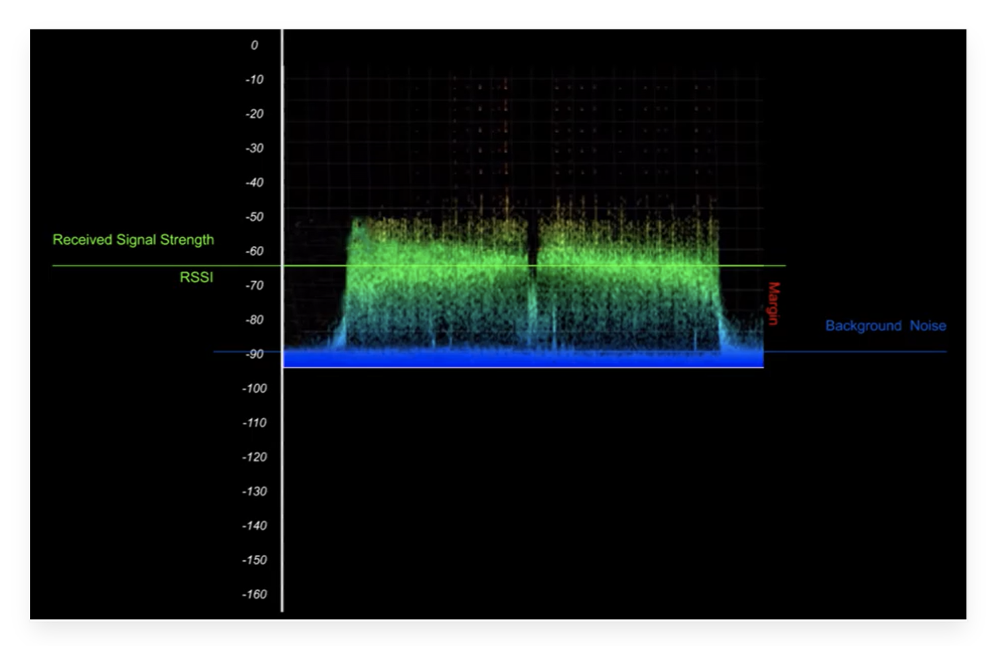

The European Telecommmuications Standardard Institure (ETSI) sets the maximum duty cycle for the EU863-870 frequency at 1% which is the maximum amount of time a device may spend communicating
Some network operators like The Things Network reduce the duty cycle further than ESTI recommends. These types of restrictions are called ‘Fair Access Policy’. For example, The Things Network’s fair access policy limits the uplink airtime to 30 seconds per day per node and downlink messages to 10 messages per day per node
In Europe, the radio spectrum allocation is the ISM band is defined in ETSI [EN300.220] The network channels can be freely attributed by the network operator. However the the three following default channels must be implemented in every EU868MHz end-device. Those channels are the minimum set that all network gateways should always be listening on
| Modulation | Bandwidth[kHz] | Channel Frequency[MHz] | Bitrate |
|---|---|---|---|
| LoRa | 125 | 868.10 | DR0 to DR5 |
| 868.30 | |||
| 868.50 | |||
The EU868 sub-band typically operates within the 868 MHz frequency range, and it is divided into several channels that LoRaWAN devices can utilise for communication. Each channel represents a specific frequency within the sub-band, and LoRaWAN gateways listen on these channel to receive data from end devices.
The allocation of channels within the EU868 sub-band is regulated and managed by the network operator or LoRaWAN service provider. They have the flexibility to assign channels within the sub-band based on factors such as local regulation , network capacity , and interference considerations
However, it is worth noting that the specific channel frequencies can be customised and configured by the network operator based on regional regulations and network requirements
When a device operates in multiple sub-bands, it needs to comply with the duty cycle limitations and other regulations specific to each sub-band. The device must adjust its transmission behaviour according to the duty cycle restrictions of the active sub-band to ensure compliance with regulatory requirements and maintain fair access to the radio spectrum
The duty cycle typically refers to the maximum aggregated transmit duty cycle for the entire band, rather than individual channels within the band. This means that the sum of all transmissions across all channels within the band should not exceed the specified duty cycle
For example, if a LoRaWAN band has a duty cycle limit of 1%, it means that the total time spent transmitting across all channels within that band should not exceed 1% of the available time
The LoRaWAN enforces a per sub-band duty cycle limitation. Each time a frame is transmitted in a given sub-band, the time of emission and the on-air duration of the frame are recorded for this sub-band. The sub-band cannot be used again during the next Toff seconds:
Toffsubband= (TimeOnAir / DutyCyclesubband) - TimeOnAir
During the unavailable time of a given sub-band, the device may still be able to transmit on another sub-band. If all sub-bands are unavailble, the device has to wait before any further transmission
Example : A device just transmitted a 0.5s long frame on one default channel. This channel is in a sub-band allowing 1% duty cycle. Therefore this whole sub-band (868 - 868.6) will be unavailable for 49.5s
The table below shows the calculations for various duty cycles per day
| Duty cycle | Equation: Time-On-Air = number of seconds per day X duty cycle | Maximum allowed Time-On-Air per day, per device |
|---|---|---|
| 0.1% | 86400 x 0.1% | 86 per seconds per day |
| 1% | 86400 x 1% | 864 seconds per day |
| 10% | 86400 x 10% | 8640 seconds per day |
The following encoding is used for Data Rate (DR) and End-point Output Power(TXPower) in the EU863-870 band:
| TXPower | Configuration |
|---|---|
| 0 | 20 dBm ( if supported ) |
| 1 | 14 dBm |
| 2 | 11 dBm |
| 3 | 8 dBm |
| 4 | 5 dbm |
| 5 | 2 dbm |
| 6..15 | RFU |
LoRa is based on Chirp Spread Spectrum (CSS) technology, where chrips (also known as symbols) are the carrier of data
The spreading factor controls the chirp rate, and thus control the speed of data transmission Lower spreading factors means faster chirps and therefore a higher data transmission rate
For every increase in spreading factor, the chirp sweep rate is halved, and so the data transmission rate is halved
Lower spreading factors reduce the range of LoRa transmission, because they reduce the processing gain and increase the bit rate. Changing spreading factor allows the network to increase or decrease data rate for each end device at the cost of range
The network also uses spreading factors to control congestion. Spreading factors are orthogonal, so signals modulated with different spreading factors and transmmitted on the same frequency channel at the same time do not interfere with each other
LoRa modulation has a total of 6 spreading factors from SF7 to SF12.
Spreading factors influence:
Compared to a higher spreading factor, a lower spreading factor provides a higher bit rate for a fixed bandwdith and coding rate
Doubling the bandwidth also doubles the bit rate for a fixed spreading factor and coding rate
The following table presents bits rates calculated with the SF7 and Coding Rate (CR) = 1 for bandwidth , 125, 250, and 500kHz
| Spreading Factor | Bandwidth | Bit rate (kbits/s) |
|---|---|---|
| 7 | 125 | 5.5 |
| 7 | 250 | 10.9 |
| 7 | 500 | 21.9 |
Larger spreading factors mean larger processing gain, so a signal modulated with a larger spreading factor can be received with less errors compared to a signal with a lower spreadig factor, and therefore travel a longer distance. For example, a signal modulated with the SF12 can travel a longer distance than a signal modulated with SF7
The Fresnel zone is an elliptical shaped body around the direct line of sight path between the end node and the gateway
Any obstacle within this volume , for example buildings, trees, hilltops or ground can weaken the transmitted signal even if there is a direct line of sight between the end node and the gateway
The maximum radius of the Fresnel zone, located half the distance between end node and gateway is calculated as follows:
Compared to a lower spreading factor, sending a fixed amount of data(payload) with a higher Spreading Factor and a fixed bandwidth needs longer time-on-air
The Things Network’s LoRaWAN airtime calculator can be used to calculate the time-on-air using
The battery life of an end device is highly dependent on the spreading factor used. Higher spreading factors result in longer active times for the radio transcievers hence shorter battery life.
Higher spreading factors provide higher receiver sensitivity. Usually, LoRa uses higher spreading factors when the signal is weak
The following table shows how spreading factors impact the receiver sensitivity
| Spreading Factor | Receiver sensitivity for bandwidth fixed at 125kHz |
|---|---|
| SF7 | -123 dBm |
| SF8 | -126 dBm |
| SF9 | -129 dBm |
| SF10 | -132 dBm |
| SF11 | -134.5 dBm |
| SF12 | -137 dBm |
The receiver sensitivity indicates the minimum power level required for the receiver to reliably detect and demodulate a signal. A lower dBm value indicates better sensitivty, as it means the receiver can detect weaker signals.
The receiver sensitivity direclty impacts the range of communication in LoRaWAN
In wireless communication, a receiver needs a good signal strength and a signal-to-noise ratio to separate the original signal from the modulated carrier.
RSSI (Received Signal Strength Indicator) is a relative measurement that help you determine if the received signal is strong enough to get a good wireless connection from the transmitter. RSSI is measured in dBm and its value is in a negative form. The closer the RSSI value is to zero, the stronger the received signal is
Apart from the output power of the transmitter, the following factors mainly influence the RSSI:
SNR (Signal-to-Noise Ratio), often written as S/N, is the ratio of the received signal power to the noise floor. SNR is commonly used to determine the quality of the received signal
SNR can be calculated using the following formula and is often expressed in decibels (dB):
SNR(dB) = Preceived signal(dBm) - Pnoise(dBm)
If the RSSI is above the noise floor the receiver can easily demodulate the signal.
Here is a good example of a positive SNR:
By looking at the above graph you can see that the RSSI is about -65 dBm and the noise floor is about -90 dBm. By using these values you can calculate the SNR as follows:
SNR (dB)= Preceived_signal(dBm) - Pnoise(dBm)
SNR (dB) = -65 dBm - (-90 dBm) = 25 dB
The positive SNR means that the signal power is greater than the noise power, I.e. the receiver will be able to demodulate the signal
If the RSSI is below the noise floor, it is impossible to demodulate the signal. However, LoRa can demodulate signals that are below the noise floor. The minimum SNR required for demodulation at different spreading factors is shown in the table below:
| Spreading Factor (RegModulationCfg) | Spreading Factor (Chips/symbol) | LoRa Demodulator SNR |
|---|---|---|
| 6 | 64 | -5 dB |
| 7 | 128 | -7.5 dB |
| 8 | 256 | -10 dB |
| 9 | 512 | -12.5 dB |
| 10 | 1024 | -15 dB |
| 11 | 2048 | -17.5 dB |
| 12 | 4096 | -20 dB |
| LoRa 868 MHz | LoRa 2.4 GHz | |
|---|---|---|
| Max Range (urban) | 5 - 10 km | 1km |
| Interference | Less susceptible | More susceptible |
| Max Bandwidth | 250 kHz | 1625 kHz |
| Max Data Rate | LoRa: 11kbps , FSK: 50kbps | 254 kbps |
| Penetration | Better | Good |
Penetration: LoRa at 868 MHz has a better penetration ability than its 2.4 GHz counterpart hence it is a better option in environments where there are many obstacles such as buildings between the transmitter and the reciever. A typical example is an ubran environment.
Duty Cycle: 868 MHz band has a duty cycle of 1% but there is no duty cycle limitation in the 2.4 GHz band so devices may generate traffic with higher intensity. However, higher load may also lead to increased contention and worse performance when too many devices compete for the channel. Both 868 MHz and 2.4 GHz band share some other limitations such as the maximum transmission (Tx) power.
Interference: The 2.4 GHz band is shared by other popular technologies such as Wi-Fi and Bluetooth hence there is a high chance for interference by those technologies.
Applications: LoRa devices that operate at 2.4 GHz are able to transmit at higher data rates because of the higher available bandwidth. A higher bandwidth allows for more accurate time-based localisation. Thus LoRa at 2.4 GHz represents an interesting solutioon for a variety of applications that involve indoor localisation, such as warehouse managemennt, but also for applications that require outdoor localisation, such as construction site monitoring, livestock tracking, etc. Since sub-GHz LoRa devices have a duty cycle regulation - they are typically used for applications that do not require frequent communication.